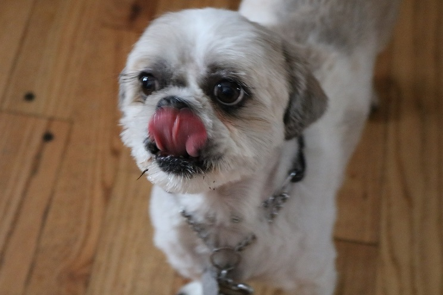

This page is dedicated to my dog, Rosko. Rosko is a Shih Tzu mix, he is very sweet and affectionate.
I adopted Rosko from the National Mill Dog Rescue in Colorado. They rehabilate and rehome dogs saved from puppy mills. While most dogs need intensive training after they are rescued because of conditions in the puppy mill, Rosko adapted very well and did not need any training.
National Mill Dog RescueRosko is very active at home and loves to stay busy during the day. Here are some of his favorite activites to do around the house: